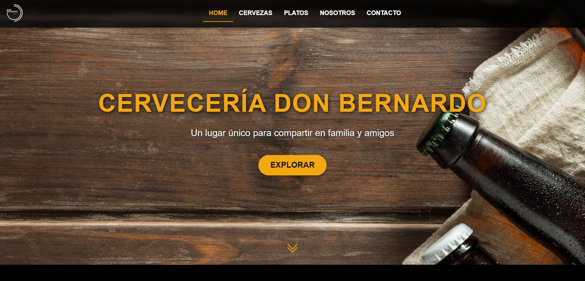
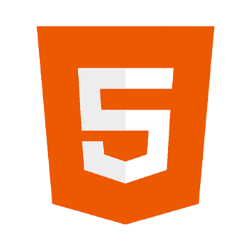
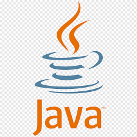
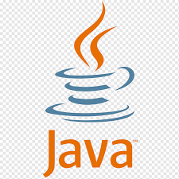
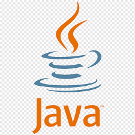

Proyectos Destacados

Cervecería Don Bernardo
Marzo 2022 - Junio 2022
Desarrollo de una página web interactiva con menú dinámico, galería de imágenes y diseño completamente responsive.

 




Lic. Agustina Bayoni
Noviembre 2024
Sitio web profesional para servicios de traducción con diseño minimalista y enfocado en la experiencia del usuario.
 NoSQL - Superior
NoSQL - Superior MongoDB
MongoDB Photoshop - Superior
Photoshop - Superior Figma - Avanzado
Figma - Avanzado Canva - Avanzado
Canva - Avanzado Github
Github